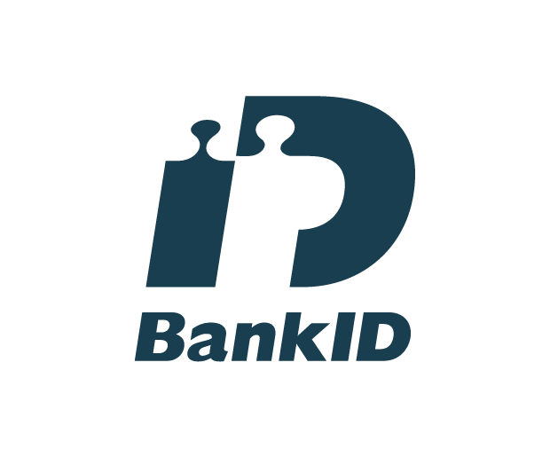
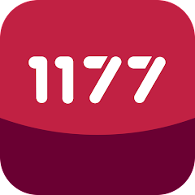
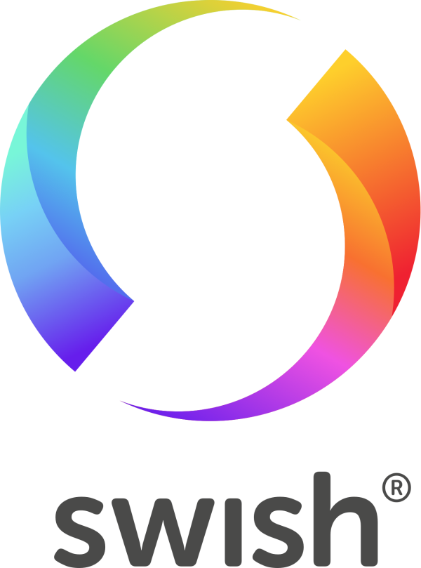

Klicka på ikonerna för att få mer information
BankID
BankID är en app som bekräftar din identitet online, gör det möjligt för dig att säkert
logga in på din internetbank, signera avtal och göra betalningar genom att koppla den
till ditt bankkonto på din smartphone eller surfplatta.
klicka här för att...se mer
1177
Vårdguiden 1177 är en app och webbsida som ger dig tillgång till pålitlig hälsoinformation,
möjlighet att söka vård och boka läkarbesök samt rådgivning om symptom och sjukdomar.
Det är ett användarvänligt verktyg för att hantera din hälsa via smartphone, surfplatta eller dator.
klicka här för att...se mer
Swish
Swish är en populär app i Sverige som gör det enkelt att skicka och ta
emot pengar via smartphone genom att koppla den till ditt bankkonto, antingen
genom att ange mottagarens mobilnummer eller genom att scanna en *QR-kod.
klicka här för att...se mer
*QR-kod är en sorts streckkod
som innehåller information.